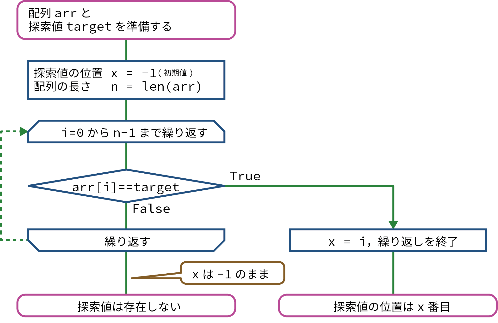

(1) リニアサーチ（線形探索法）
リニアサーチ（線形探索法）とは
リニアサーチ（線形探索法）は、先頭から順番に探す値が見つかるまで探すという方法で探索するアルゴリズムです。配列（リスト）内を直線的（リニア）に探していくので、リニアサーチといいます。3-1. リスト #例題2でも扱いました。
単純でわかりやすい方法ですが、値をひとつひとつ調べていくので、データが大量になると時間がかかってしまう欠点があります。
フローチャート
デモンストレーション
探索値
プログラム
Colaboratoryのノートブックに書き写しながら、理解しましょう。
配列（Pythonではリストともいいます）は英語でarrayというので、これを略してarrという変数名で用いられます。
arr = [10, 23, 45, 67, 89, 12, 3]
print(arr)
target = int(input("探索値: ")) # 探索値を入力させる
x = -1 # 探索値のインデックス番号（初期値: -1）
n = len(arr) # 配列の長さ
for i in range(n): # 配列の中を順番にループする
if arr[i] == target: # i番目の要素と探索値が等しければ
x = i # xにiを代入する
break # ループを終了する
if x != -1: # xが-1ではない場合（探索値が見つかった場合）
print(target, "のインデックス番号は", x)
else: # xが-1(初期値)の場合（探索値が存在しなかった場合）
print(target, "は存在しません。")
[10, 23, 45, 67, 89, 12, 3]
探索値: 45 # 45と入力した場合
45 のインデックス番号は 2
探索回数
探索回数は、探索値を見つけるまでにかかった繰り返しの回数のことです。
ここでは、データ数\( n \)の配列について考えます。
最小探索回数
最小探索回数は、探索値が配列の先頭にあった場合なので、１回となります。
最大探索回数
最大探索回数は、配列の末尾にあった場合なので、 \( n \) 回となります。
平均探索回数
平均探索回数は、すべての探索回数の平均（期待値）で求めることができます。
1回目で見つかる確率は \(1/n\)，2回目で見つかる確率は \(1/n\) ，3回目で見つかる確率は \(1/n\)...，\(n\)回目で見つかる確率は \(1/n\)なので、平均探索回数は、
\[ \begin{align*} \text{平均探索回数} &= 1 \times \frac{1}{n} + 2 \times \frac{1}{n} + 3 \times \frac{1}{n} + \ldots + n \times \frac{1}{n} \\[16pt] &= (1 + 2 + 3 + \ldots + n) \times \frac{1}{n} \\[16pt] &= \frac{1}{2}n(n + 1) \times \frac{1}{n} \\[16pt] &= \frac{n + 1}{2} \end{align*} \]となります。